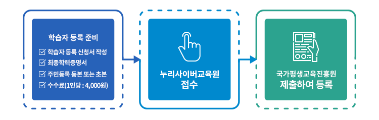
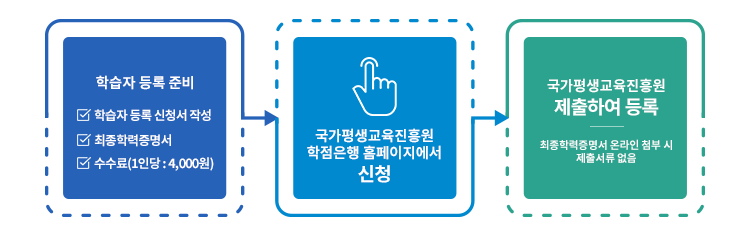

학점은행제 개요
학점은행제란?
[학점인정 등에 관한 법률](법률 제 8916호)에 의거, 학교 밖에서 이루어지는 다양한 형태의 학습 및 자격증을 학점으로 인정받을 수 있도록 하고 학점이 누적되어 일정기준을 충족하면 학위취득을 가능하게 함으로써 궁극적으로 열린교육사회, 평생학습사회를 구현하기 위한 제도이다.
개인의 학습 결과는 학점화 되어 국가평생교육진흥원에 등록되고, 이러한 학점이 누적되면 4년제 대학 졸업 학력으로 인정받아 학사학위를 취득할 수 있다.
학점인정 대상자
고등학교 졸업자나 동등 이상의 학력을 가진 사람들 중
가. 평가인정 받은 학습과목을 운영하는 교육훈련기관에서 이수한 학점을 인정받고자 하는 자
나. 독학사 시험 합격 및 시험면제교육과정 이수 후 과목별로 학점을 인정받고자 하는 자
다. 국가자격 취득 후 이를 학점으로 인정받고자 하는 자
라. 전문대학 졸업 후 학사학위 취득을 위하여 국가기술자격증 또는 시간제 수업 이수학점을 보유하고 있는 자
마. 대학(교)을 다니다가 중퇴하였으나 중퇴하기 전까지 이수한 학점을 인정받고자 하는 자
바. 대학(교)에서 시간제등록을 통해 이수한 학점을 인정받고자 하는 자
사. 이미 학위를 갖고 있지만 새로운 전공 분야를 공부하여 다른 학위를 취득하고자 하는 자
학점은행제 학사학위 (4년제 대학)과정
수능무관 학사학위 취득 가능
고등학교 졸업 학력 이상자가 단기간에 저렴한 학비로 학점은행제를 통한 대학교 졸업 학사학위를 취득할 수 있는 제도
4년제 대학 졸업 학력 인정
정규 4년제 대학 졸업 학력 인정, 대학원 진학 가능
4년제 대학 3학년 학사편입(일반편입 보다 용이)
학습자 등록 의미
학점은행 학습자로 등록하여 학점을 인정, 관리하기 위하여 신청하는 것으로 학점인정 신청과 동시에 하거나 혹은 신청 이전 처음 한번만 등록하면 된다.
학습자 등록을 해야만 학점인정 신청을 할 수 있으며, 원격평생교육원이나 국가평생교육진흥원 홈페이지[학습자 정보검색]을 통해 학점취득 사항을 조회할 수 있다.
학습자 등록 절차
고등학교 졸업자나 동등 이상의 학력을 가진 사람들 중
가. 평가인정 받은 학습과목을 운영하는 교육훈련기관에서 이수한 학점을 인정받고자 하는 자
나. 독학사 시험 합격 및 시험면제교육과정 이수 후 과목별로 학점을 인정받고자 하는 자
다. 국가자격 취득 후 이를 학점으로 인정받고자 하는 자
라. 전문대학 졸업 후 학사학위 취득을 위하여 국가기술자격증 또는 시간제 수업 이수학점을 보유하고 있는 자
마. 대학(교)을 다니다가 중퇴하였으나 중퇴하기 전까지 이수한 학점을 인정받고자 하는 자
바. 대학(교)에서 시간제등록을 통해 이수한 학점을 인정받고자 하는 자
사. 이미 학위를 갖고 있지만 새로운 전공 분야를 공부하여 다른 학위를 취득하고자 하는 자
학습자등록 및 학점인정신청 시기와 장소
| 구분 | 1분기 | 2분기 | 3분기 | 4분기 |
|---|---|---|---|---|
| 국가평생교육진흥원 | 방문접수 1.2 ~ 1.31 [②12.15~1.15] |
4.1 ~ 4.30 | 7.1 ~ 7.31 [⑧6.15 ~ 7.15] |
10.1 ~ 10.31 |
| 광역시 이상 시,도교육청 방문 접수 | 1.2 ~ 1.31 [②12.15~1.15] |
4.1 ~ 4.15 | 7.1 ~ 7.31 [⑧6.15 ~ 7.15] |
10.1 ~ 10.15 |
| 교육훈련기관 단체접수 | 12.15 ~ 익년1.15 | 4.1 ~ 4.20 | 6.16 ~ 7.15 | 10.1 ~ 10.20 |
- 단, 접수기간은 추후 변동 가능하니 자세한 사항은 연간 주요 학사일정을 참조하십시오.
- 평일(월~금) 09:00~17:00까지 접수 합니다.(토, 일, 공휴일 제외)
- 교육청 접수시간 오전 09:00~12:00, 오후 13:00~16:00(해당 교육청의 접수마감시간을 확인하시기 바랍니다.)
- 현재 학습자등록 및 학점인정신청은 방문접수(대리인 접수 가능) 외에 온라인 접수도 시행되고 있습니다.
- [②-2월 학위대상자/ ⑧-8월 학위대상자] 괄호 안 신청기간은 학위수여대상자 최종 학점인정신청 및 학위신청기간임.
학습자 등록 절차
수 학습자 등록 신청서 : 원격평생교육원이나 국가평생교육진흥원 학점은행 홈페이지 자료실에서 다운로드
- 학습자 등록 : 1인당 학위 취득까지 한번만 등록
원격평생교육원에서 대행신청 할 경우

국가평생교육진흥원 학점은행 홈페이지에서 개인등록 할 경우
